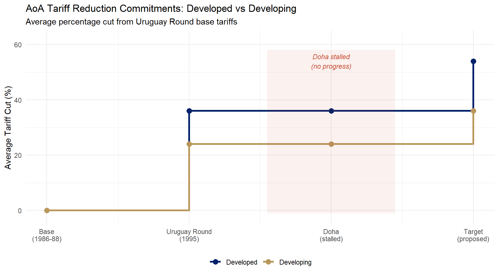

library(ggplot2)
library(tidyr)
df_tar <- data.frame(
round_num = c(0, 1, 2, 3),
round_lbl = c("Base\n(1986-88)", "Uruguay Round\n(1995)",
"Doha\n(stalled)", "Target\n(proposed)"),
Developed = c(0, 36, 36, 54),
Developing = c(0, 24, 24, 36)
)
df_long <- pivot_longer(df_tar, cols = c(Developed, Developing),
names_to = "Group", values_to = "Reduction")
ggplot(df_long, aes(x = round_num, y = Reduction,
color = Group, group = Group)) +
geom_step(linewidth = 1.2) +
geom_point(size = 3) +
annotate("rect", xmin = 1.55, xmax = 2.45, ymin = -1, ymax = 58,
fill = "#C84B31", alpha = 0.08) +
annotate("text", x = 2, y = 54,
label = "Doha stalled\n(no progress)",
color = "#C84B31", size = 3, fontface = "italic") +
scale_color_manual(values = c("Developed" = "#012169", "Developing" = "#B9975B")) +
scale_x_continuous(
breaks = 0:3,
labels = df_tar$round_lbl
) +
scale_y_continuous(limits = c(-2, 62)) +
labs(
title = "AoA Tariff Reduction Commitments: Developed vs Developing",
subtitle = "Average percentage cut from Uruguay Round base tariffs",
x = NULL, y = "Average Tariff Cut (%)", color = NULL
) +
theme_minimal(base_size = 11) +
theme(legend.position = "bottom")